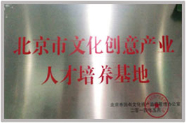
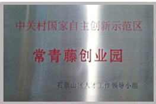
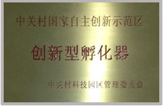

赵文权
-
蓝色光标创始人
123毕业于北京大学政府管理学院，现任蓝色光标传播集团董事长兼首席执行 官。2010年，赵文权与管理团队共同带领蓝色光标在国内创业板上市， 蓝色光标由此成为第一家上市的本土公共关系专业服务公司。 2013年4月25日在赵文权的主导下，蓝色光标宣布将以约3.5亿元人民币 收购全球公关巨头Huntsworth，成为其第一大股东。 2011年，赵文权为博看文思注资。
薛蛮子
-
中国天使投资第一人
薛蛮子是UT斯达康创始人之一，曾担任中国电子商务网8848董事长、中华学习网董事长等职务。薛老投资过的项目包括PCPOP、李想的汽车之家、方三文的雪球财经以及杜子健的华艺百创等公司。被奇虎360董事长周鸿祎称为“中国天使投资第一人”。2011年薛蛮子为博看文思投资。

李开复博士
-
创新工场董事长兼首席执行官
李开复博士曾在谷歌公司担任全球副总裁兼大中华区总裁，在加盟Google之前，从2000-2005李开复博士任微软公司全球副总裁，在服务器软件、Windows、Office里面都提供了重要的核心技术和产品。在晋升全球副总裁之前，李博士于1998创办微软中国研究院，在极短时间内创建了一个国际一流的计算机研究院。2009年9月李开复博士创办创新工场。2013年，李开复博士为博看文思注资。
徐小平
-
真格基金创始人
中国著名天使投资人，在创办真格基金之前，徐小平先生是中国最大教育培训机构新东方教育科技集团（NYSE: EDU）的联合创始人。他在广大中国留学生中具有强大的影响力，很多学生都从他的演讲、教学以及畅销书中受益良多。 2006年，徐小平先生被南方人物周刊评选为“中国魅力50人”之一，2004年入选福布斯杂志“中国名人榜 Top 100” 。2011年，徐小平老师为博看文思注资。
雷 军
-
小米创始人、董事长兼CEO
雷军1992年参与创办金山软件，1998年出任金山软件CEO。1999年创办了卓越网。2007年，金山软件上市后，雷军卸任金山软件总裁兼CEO职务，担任副董事长。之后几年，雷军作为天使投资人，投资了凡客诚品、多玩、优视科技等多家创新型企业。2011年7月，雷军重返金山软件，任金山软件公司董事长。2010年4月6日，雷军选择重新创业，建立了小米公司。2013年，雷军为博看文思注资。
-  北京市文化创意产业人才培训基地
-  常青藤创业园指定人才培养基地
-  中关村国家自主创新示范区创新孵化器
- 新浪网最具实力教育集团
2005年07月：博看科技（博看文思前身）成立，同年在美国波士顿建立分部;
2009年06月：第一款应用FIves Little Ducks在苹果appstore上线;
2009年07月：第一iOS培训班在北京长远天地大厦开班;
2010年04月：博看文思APP应用cute math被苹果公司评为"精品应用";
2011年04月：博看文思第50款iphone应用成功上线appsto;
2011年11月：上市公司蓝色光标集团为博看文思注资,同年,天使投资人薛蛮子为博看文思注资;
2012年04月：博看文思总部迁址；北京石景山总工会二层;
2012年06月：博看文思携手东北农业大学建移动互联网实训基地;
2012年07月：博看文思接受CCTV财经频道专访
2012年08月：博看文思广州校区、厦门校区同时开班上课
2012年12月：博看文思荣获新浪网"最具综合实力教育集团"称号;
2013年04月：李开复、雷军、徐小平分别投资博看文思;
2013年06月：博看文思成为山东临沂中关村软件产业基地唯一人才合作机构;
2013年06月：车库咖啡博看文思学员专场招聘会闪亮开场
2014年04月：中关村国家自主创新示范区常青藤创业园正式落户于博看文思;
2014年06月：博看文思成为中国交通运输研究院指定人才培养单位;
2014年09月：博看文思成为搜狐网HTML5移动跨平台人才培养基地;
2014年10月：博看文思一举拿下央视网CCTV《谁是地球球王》竞标项目;
2014月10月：蒲公英（移动互联网）国际青年创业驿站正式落户博看文思;
2014年12月：全球最大的电影制作公司technicolor指定博看文思为HTML5培训单位;
博看文思与你精彩继续……